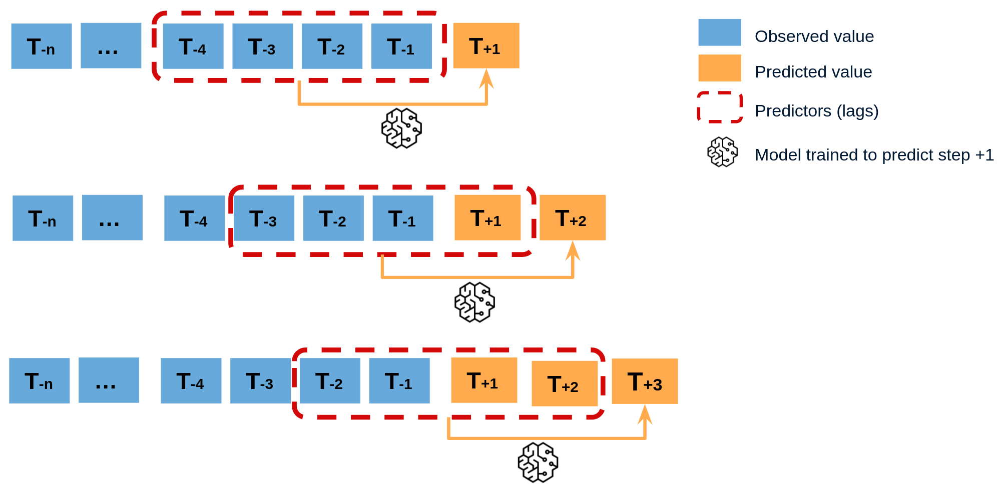

def make_monthly_predictions(input_data):
# Fill your actual logic here!
output_data = input_data
return output_dataUnderstanding Kedro’s Namespace Pipelines
Kedro’s Namespace Pipeline is a powerful feature that allows for flexible pipeline reuse, especially handy for tasks like time series forecasting.
Getting Started
This blog post is based on this example Kedro project. Consider a basic pipeline node for monthly predictions:
Now, let’s create a simple one node pipeline using Kedro, this will be the building block of our pipelines:
from kedro.pipeline.modular_pipeline import pipeline
from kedro.pipeline import node
base_pipeline = pipeline(
[
node(
func=make_monthly_predictions,
inputs=["input_data"],
outputs=["output_data"]
)
]
)It basically just call the make_monthly_prediction, and define what are the “inputs” and “outputs”.
Utilizing Namespace for Efficiency

Now that we have our base pipeline, For time series forecasting, where predictions depend on previous results, we can efficiently handle this with [Namespace Pipelines]((https://docs.kedro.org/en/0.18.0/tutorial/namespace_pipelines.html). Start by creating a Namespace Pipeline:
namespace_pipeline = pipeline(
[
node(
func=make_monthly_predictions,
inputs=["input_data"],
outputs=["output_data"]
)
],
namespace="namespace"
)The namespace argument automatically adds a prefix to inputs and outputs. You can inspect the pipeline by printing it.
namespace_pipelinePipeline([
Node(make_monthly_predictions, ['input_data'], ['namespace.output_data'], None)
])If you want to keep some datasets from namespacing, you can specify the inputs or outputs argument of the pipeline function to overide it:
(https://docs.kedro.org/en/stable/nodes_and_pipelines/modular_pipelines.html#using-the-modular-pipeline-wrapper-to-provide-overrides).
namespace_pipeline = pipeline(
[
node(
func=make_monthly_predictions,
inputs=["input_data"],
outputs=["output_data"]
)
],
inputs=["input_data"], # Escape from namespace
namespace="namespace"
)namespace_pipelinePipeline([
Node(make_monthly_predictions, ['input_data'], ['namespace.output_data'], None)
])Building the Time-Series Pipeline
Now that we understand the mechanics of namespace, let’s build a time-series pipeline by iterating through months and connecting pipelines:
months = ["jan", "feb", "mar", "apr"]
def create_pipeline(months):
pipelines = []
for i in range(len(months) - 1):
curr, next = months[i], months[i+1]
pipelines.append(pipeline(base_pipeline,
outputs={"output_data": f"{next}.input_data"},
namespace=curr))
return pipeline(pipelines)
final_pipeline = create_pipeline(months)final_pipelinePipeline([
Node(make_monthly_predictions, ['jan.input_data'], ['feb.input_data'], None),
Node(make_monthly_predictions, ['feb.input_data'], ['mar.input_data'], None),
Node(make_monthly_predictions, ['mar.input_data'], ['apr.input_data'], None)
])By visualizing the pipeline with kedro viz, you can observe the connections between each step.